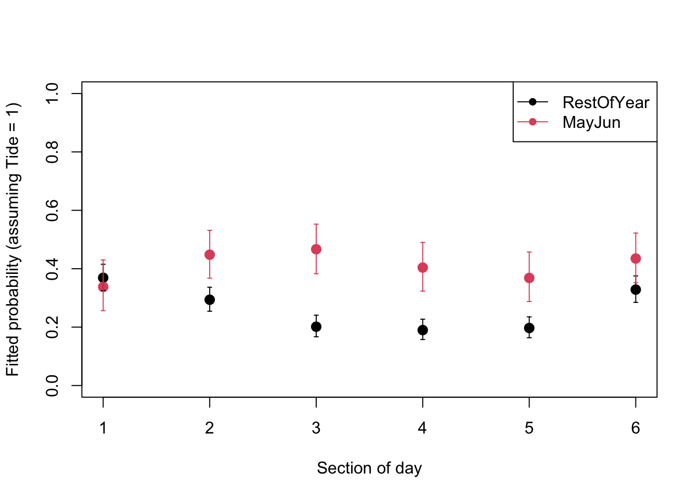

1. It has been suggested that the patterns of use of different coastal foraging sites by dolphins can be quite variable over time. For example, sightings of bottlenose dolphins at the Sutors site, in the Moray Firth, are thought to be more frequent around May-June, although the presence of dolphins may depend on various factors, including tidal state and time of day. The goal of this exercise is to describe variation in dolphin probability of presence at Sutors, in relation to factors like tidal state, time of day and season (particularly May/June vs. rest of the year). In particular, we would like to ask if preference for certain tidal states, or times of day may change in different periods of the year, by testing possible interactions between the appropriate predictors.
The data for this exercise were collected by the Cromarty Lighthouse team between 2010 and 2016, using underwater sound recorders (CPOD) to continuously monitor the pattern of presence and foraging behaviour of bottlenose dolphins at key sites in the Moray Firth.
X index of the observationspresence: 0 for absence, 1 for presenceyearjulianday: day of the yeartideangle_deg: tidal state`mh: hour of the day (integer)mon: month (integer)Per2: Splits year into two periods (May+June vs rest of year)Per4: Splits year into 3 periods of 20 days from early May to end of June vs rest of the yearTime6: Time of day split into 6 4h periods (first centered on midnight)Tide4: Tide angle split into 4 quadrants with peaks in middle of respective bin
The data have been aggregated as presence/absence at a 1h resolution. You will focus on one of the sites, “Sutors”, a subset which will leave you with just under 5000 presence/absence records to play with. Note that “absence” refers to the absence of a detection within each hour, not necessarily to the absence of dolphins. We can ignore this in the analysis, but we should keep it in mind when interpreting the results.
Background to the data and the study can be found here, courtesy of Paul Thompson. The exercise can be done entirely without consulting this. I recommend you watch this or any companion material (the referenced paper) outside the synchronous session, to make the most of the time you have with demonstrators to progress on the exercises.
As in previous exercises, either create a new R script (perhaps call it GLM_PresAbs) or continue with your previous R script in your RStudio Project. Again, make sure you include any metadata you feel is appropriate (title, description of task, date of creation etc) and don’t forget to comment out your metadata with a # at the beginning of the line.
2. Import the data file ‘dolphin.csv’ into R by running the following chunk of code (please unfold the code chunk and copy/paste).
dat<- read.csv("./data/dolphin.csv", stringsAsFactors= T)
# re-ordering factor levels for convenience:
dat$Per2<- factor(dat$Per2, levels= c("RestOfYear", "MayJun"))
# (making "RestOfYear" the reference level)
dat$Per4<- factor(dat$Per4, levels= c("RestOfYear", "MayJun1", "MayJun2", "MayJun3"))
dat$Time6<- factor(dat$Time6, levels= c("MNight", "AM1", "AM2", "MDay", "PM1", "PM2"))
# reordering chronologically
str(dat)## 'data.frame': 5000 obs. of 11 variables:
## $ X : int 31458 14027 40551 40456 15894 13109 23797 6053 23445 34584 ...
## $ presence : int 0 1 0 0 1 0 0 0 0 0 ...
## $ year : int 2014 2011 2015 2015 2011 2011 2013 2010 2012 2014 ...
## $ julianday : int 59 226 80 76 312 188 102 256 327 192 ...
## $ tideangle_deg: int 247 356 176 299 127 75 44 73 180 103 ...
## $ mh : int 8 13 7 8 3 7 3 6 14 15 ...
## $ mon : int 2 8 3 3 11 7 4 9 11 7 ...
## $ Per2 : Factor w/ 2 levels "RestOfYear","MayJun": 1 1 1 1 1 1 1 1 1 1 ...
## $ Per4 : Factor w/ 4 levels "RestOfYear","MayJun1",..: 1 1 1 1 1 1 1 1 1 1 ...
## $ Time6 : Factor w/ 6 levels "MNight","AM1",..: 3 4 3 3 2 3 2 2 4 5 ...
## $ Tide4 : int 4 1 3 4 2 2 1 2 3 2 ...
3. Take a look at the structure of this dataframe. Start with an initial data exploration to look at any imbalance between the predictors, and factors affecting presence of dolphins. Which ones are continuous or categorical? Which ones would your intuition suggest you to use for data exploration? For modelling?
table() is a useful way to count the number of observations per category or combinations of categories, e.g. ObsPerMonthYear<- table(dat$year, dat$mon)plot(ObsPerMonthYear) returns a “mosaic plot” where the area of each rectangle is proportional to the count.bla<- tapply(dat$presence, list(dat$GroupOfInterest), mean)plot(bla, type= "b", ylim= c(0, 1), xlab= "GroupOfInterest", ylab= "presence")matplot(tapply(dat$presence, list(dat$Group1, dat$Group2), mean), type= "l", ylim= c(0, 1), xlab= "Group1", ylab= "presence", lty= 1) produces one line per category in Group2.
4. Let’s warm-up with a Binomial (Bernoulli) GLM (using glm() and the appropriate family argument) with numerical time of day, tide angle and day of the year as predictors: tideangle_deg + mh + julianday. This model doesn’t fully address the study goals stated above, but is easier to get our head around and looks at what may or may not work as a modelling approach.
5. Obtain summaries of the model output using the summary() function. Make sure you understand the mathematical and biological interpretation of the model, by writing down the complete model on paper (with distribution and link function). What biological hypothesis does each term imply, qualitatively?
6. Let’s now validate the model, using deviance residuals. The easiest tool is the binnedplot() in the arm package, if you can. If you are unable to install the arm package, use the “DIY” code chunk further down for an alternative to binnedplot().
library(car)
vif(PA1)
# No concern.
par(mfrow= c(2, 2))
plot(PA1, col= dat$presence + 1) # red is presence, black is absence
# Not very useful or pretty statistical art. Not worth framing.
# plot against predictors:
res.PA1.p<- resid(PA1, type= "pearson")
par(mfrow= c(2, 2))
plot(res.PA1.p ~ dat$tideangle_deg, col= dat$presence + 1)
plot(res.PA1.p ~ dat$mh, col= dat$presence + 1)
plot(res.PA1.p ~ dat$julianday, col= dat$presence + 1)
# Can't see anything useful.
# Use arm if you can:
library(arm)
par(mfrow= c(2, 2))
binnedplot(x= dat$tideangle_deg, y= res.PA1.p, xlab= "Tide angle", nclass= 100)
binnedplot(x= dat$mh, y= res.PA1.p, xlab= "hour")
binnedplot(x= dat$julianday, y= res.PA1.p, xlab= "Day of the year", nclass= 100)
In case needed, a home-made alternative to the binnedplot function:
par(mfrow= c(2, 2))
# plot the residuals against tideangle_deg
plot(res.PA1.p ~ dat$tideangle_deg, col= dat$presence + 1)
# get the mean of the residuals for each 1 degree bin of tideangle_deg
tide.means<- tapply(res.PA1.p, list(dat$tideangle_deg), mean)
# convert ordered bin labels into numbers (1 to 360)
tide.vals<- as.numeric(names(tide.means))
# plot residual means against bin number
lines(tide.means ~ tide.vals, col= 3)
# add horizontal line at y= 0 for reference
abline(h= 0, lty= 3, col= grey(0.5))
# same idea for hour of the day:
plot(res.PA1.p ~ dat$mh, col= dat$presence + 1)
hour.means<- tapply(res.PA1.p, list(dat$mh), mean)
lines(hour.means ~ as.numeric(names(hour.means)), col= 3)
abline(h= 0, lty= 3, col= grey(0.5))
# same for julianday:
plot(res.PA1.p ~ dat$julianday, col= dat$presence + 1)
day.means<- tapply(res.PA1.p, list(dat$julianday), mean)
lines(day.means ~ as.numeric(names(day.means)), col= 3)
abline(h= 0, lty= 3, col= grey(0.5))
# Same story.
7. Are you happy with the diagnostic plots? Is there something you could do to improve the model while addressing the initial question(s)? Spend some time looking at the available predictors, and working out a solution, before unfolding the hints in the code chunk below. If you have relevant biological information, or insight from your data exploration that suggests a better approach than what is indicated below, feel free to try it for comparison.
# there are several ways the non-linearity could be addressed.
# one of the most straightforward with glm() is to discretize
# continuous predictors into bins and to treat them as factors.
# In this way, a mean is estimated per category of the variable,
# and no assumption is made about the shape of the relationship.
# Each of the predictors we started with already has one or more
# categorical counterpart in the data set.
# I suggest you try fTide4 + Per2 + Time6,
# with fTide4 being the factor version of Tide4 (needs creating).
# Then, we are also interested in interactions between these predictors.
# Some of the more biologically relevant interactions could include
# + fTide4:Per2 + fTide4:Time6 + Per2:Time6
# You can choose something else or cut the predictors into different bin
# definitions, too. Example code for this is given in the appendix at
# the end of the practical
8. Let’s move on to a Binomial (Bernoulli) GLM with some interactions of interest between numerical time of day, tide angle and day of the year as predictors: tideangle_deg + mh + julianday + tideangle_deg:mh + mh:julianday + tideangle_deg:julianday. Which individual interactions are implied in this formula? (Hint: if unsure, the summary of the model at the next question will list them).
9. Obtain summaries of the model output using the summary() function. Make sure you understand the biological hypothesis implied by each term, qualitatively.
10. Are all the terms of the new version of the model significant? If not, simplify the model. Remember to choose the correct ANOVA method (sequential or not), and the appropriate test.What are the main sources of variation in the data? What is the proportion of deviance explained?
11. Do the model validation for the minimal adequate model. Is everything looking good?
12. Assuming that the model is fine as it is, let’s plot the predictions with their confidence intervals for the probability of presence in relation to time of day, in both the May/June period and the rest of the year. For tide, assume it is fixed at a level of your choice, e.g. “1”.
data.frame called X containing the data to predict for. This can be done by hand following previous examples or using the function expand.grid for creating all the combinations of the variables of interest: expand.grid(NameOfVar1 = levels(data$NameOfVar1), NameOfVar2= levels(data$NameOfVar2), NameOfVar3= "1"))predict() with the appropriate options to obtain the fitted values on the link scale and for being able to calculate the confidence intervals later. Store in object Z.Z$fit, against the appropriate column of X (you can use different symbols or colours for groups).segments or arrows to add confidence intervals to the fitted values (see the help page for the respective function).The code is available below for you to unfold, if you don’t want to try yourself (you are always welcome to ask demonstrators for help).
PA12.pred<- predict(PA12, PA12.dat4pred, type= "link", se.fit= T)
PA12.dat4pred$fit.resp<- plogis(PA12.pred$fit)
# or exp(PA12.pred$fit)/(1+exp(PA12.pred$fit)) for the long version
# lower 95% CI
PA12.dat4pred$LCI<- plogis(PA12.pred$fit - 1.96*PA12.pred$se.fit)
# upper 95% CI
PA12.dat4pred$UCI<- plogis(PA12.pred$fit + 1.96*PA12.pred$se.fit)

13. How satisfied are you with the model, and with all the assumptions being met? What have you learned from it, with respect to the initial aims of the study? Are there areas of improvement? Optional The publication here offers a different approach to analysing these data, using slightly fancier GLMs with smooth terms (called GAMs, for Generalized Additive Models), and a few additional refinements: [https://www.nature.com/articles/s41598-019-38900-4]. What assumptions differ between this and your approach?
End of the Binomial (Bernoulli) GLM - dolphin behavioural plasticity exercise
A1. Repeat the model selection this time using AIC, with step(). Do you obtain the same minimal adequate model? Then replace Per2 by month mon (as a factor) for a finer seasonal resolution, and apply a model selection with step() again. Summarize the performance of the alternative models in a table. Is the same model structure preferred? Which of the Per2 or mon models is favoured by AIC? Do the residuals look better?
Code for converting the original publicly available data (10 Mb) [https://datadryad.org/stash/dataset/doi:10.5061/dryad.k378542] into the ‘dolphin.csv’ file. Includes converting numeric variables into categories that you can define to suit your needs (binning), including making more bins if you wish. Binning is done easily using the cut() function. For example, creating 5 regular bins is done using cut(MyVector, breaks= 5). Note here that cut is used in a non-standard way to make the beginning and end of a cyclic variable belong to the same bin, which may be more biologically meaningful (you can decide, you are the expert!).
fulldat<- read.delim("./data/FineScale_Dataset_GAMM_OFB2019.txt")
str(fulldat)
dat<- fulldat[fulldat$site == "Sutors", c("presence", "year", "julianday", "tideangle_deg", "mh")]
dat$mon<- as.numeric(cut(dat$julianday, seq(1, 370, by= 30.5)))
dat$tideangle_deg<- round(dat$tideangle_deg)
# count number of data per year/month combination and represent as mosaicplot
plot(table(dat$year, dat$mon))
# remove 2016
dat<- dat[dat$year != 2016, ]
# Bin year into two periods (May+June vs rest of year)
dat$Per2<- cut(dat$julianday, breaks= c(-1, 120, 180, 400),
labels= c("RestOfYear", "MayJun", "RestOfYear"))
dat$Per2<- factor(dat$Per2, levels= c("RestOfYear", "MayJun"))
# (making "RestOfYear" the reference level)
# check this is working as intended:
plot(as.numeric(dat$Per2) ~ dat$julianday)
# Bin year into 4 periods:
# 3 periods of 20 days from early May to end of June vs rest of the year
dat$Per4<- cut(dat$julianday, breaks= c(0, 120, 140, 160, 180, 400),
labels= c("RestOfYear", "MayJun1", "MayJun2", "MayJun3", "RestOfYear"))
dat$Per4<- factor(dat$Per4, levels= c("RestOfYear", "MayJun1", "MayJun2", "MayJun3"))
# (reordering levels)
# check this is working as intended:
plot(as.numeric(dat$Per4) ~ dat$julianday)
# Bin time of day into 6 4h periods (first centered on midnight)
dat$Time6<- cut(dat$mh, breaks= c(-1, seq(2, 22, by= 4), 24),
labels= c("MNight", "AM1", "AM2", "MDay", "PM1", "PM2", "MNight"))
dat$Time6<- factor(dat$Time6, levels= c("MNight", "AM1", "AM2", "MDay", "PM1", "PM2"))
# reordering chronologically
# check this is working as intended:
table(dat$Time6, dat$mh)
# Bin tide angle into 4 quadrants with peaks in middle of respective bin
dat$Tide4<- cut(dat$tideangle_deg, breaks= c(-1, 45, 135, 225, 315, 360),
labels= c(1:4, 1))
# check this is working as intended:
plot(as.numeric(dat$Tide4) ~ dat$tideangle_deg)
# unless you desperately want to test the performance of your computer,
# play safe and reduce the size of the data set from 50000 to 5000:
set.seed(74) # makes the random sampling reproducible
# This means you will get the same random sample as the solutions to
# the exercises and the same results.
dat<- dat[sample(1:nrow(dat), size= 5000), ] # random subset or rows
write.csv(dat, "dolphin.csv")